The emulation environment was configured using GNS3. Cisco c7200-adventerprisek9-mz router images were imported and allocated specific hardware slots to ensure adequate port availability:
A hierarchical switching topology was implemented consisting of a distribution switch (Switch 3) and two access switches (Switch 1 and Switch 2). Four Virtual PCs were assigned IP addresses within the 192.168.1.0/24 broadcast domain.
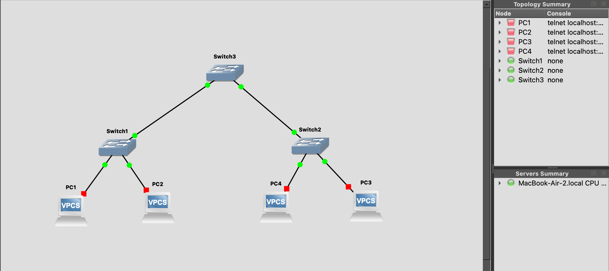
Analysis: When the simulation first starts, the ARP tables of the VPCSs are empty. Using the ping command in their console, simple ICMP messages are exchanged so that the ARP table can be dynamically updated.
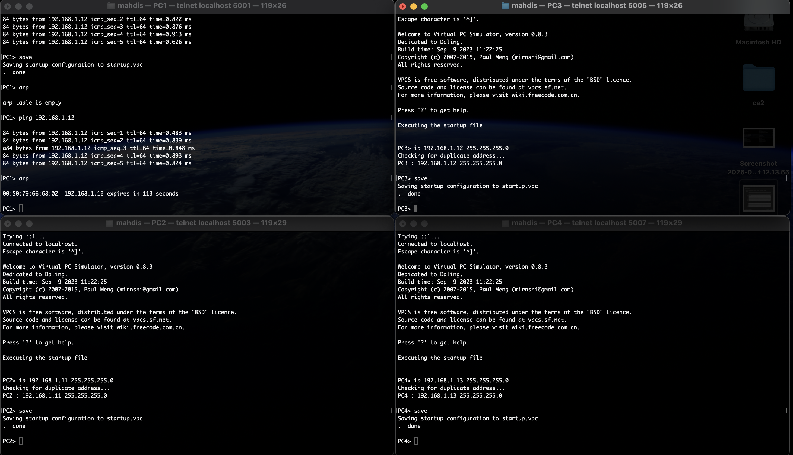
To enable communication between VLAN 10 and VLAN 20, a Router-on-a-Stick topology was deployed. The switch port connected to Router 1 (R1) was configured as an 802.1Q trunk.
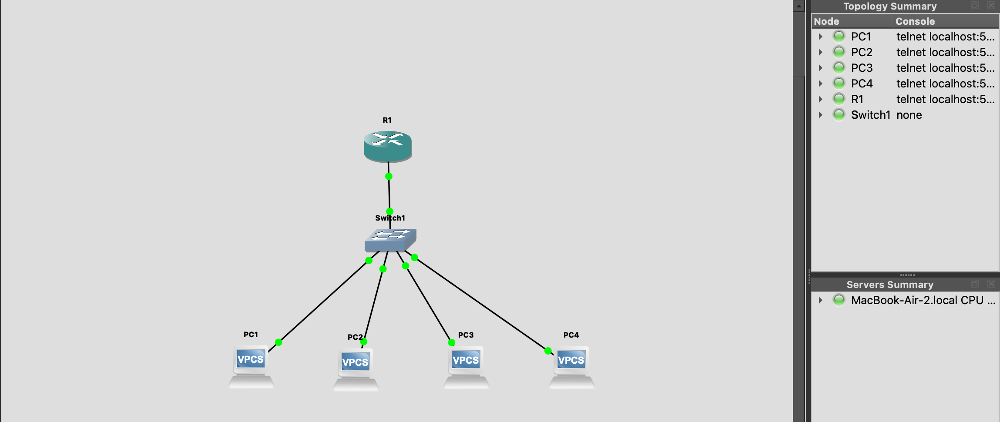
On R1, the physical interface was divided into two logical sub-interfaces (f0/0.10 and f0/0.20), acting as the default gateways for their respective VLANs.
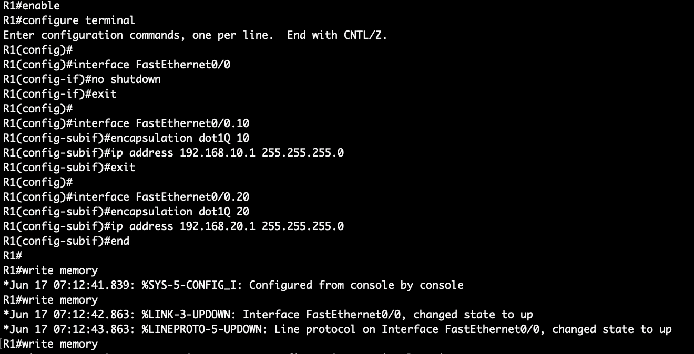
Analysis: By using the show ip route command, we can verify that the router has successfully identified both VLAN subnets as "directly connected" (denoted by the 'C'). This indicates that R1 is now capable of routing traffic between the two separate broadcast domains.
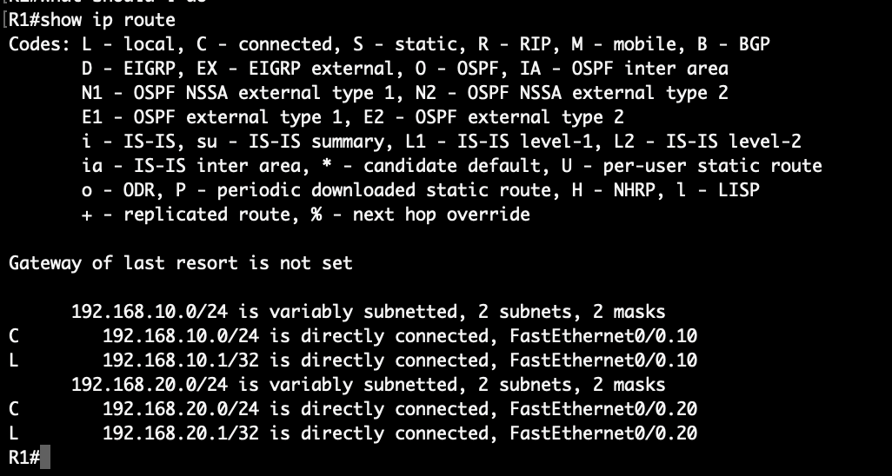
With the router fully configured, connectivity was tested across the network. The initial ICMP Echo Requests experienced a slight delay as the router utilized ARP to resolve the destination MAC addresses. Subsequent packets were routed seamlessly with minimal latency, proving successful Inter-VLAN communication.
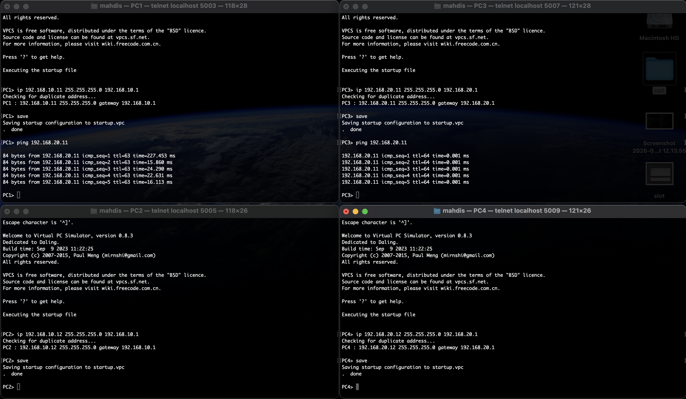
A four-router core network was established using serial point-to-point links operating on /30 subnets to simulate a Wide Area Network (WAN). Edge networks were connected via FastEthernet interfaces.
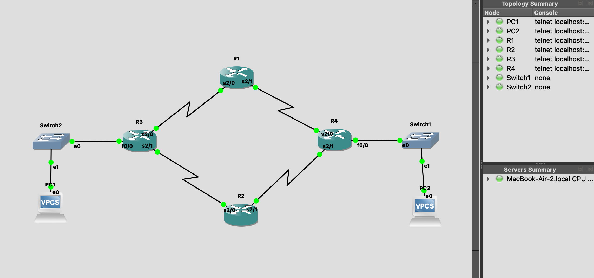
Static routes were explicitly defined on all routers to ensure end-to-end connectivity. To provide fault tolerance, "Floating Static Routes" were configured with a higher Administrative Distance (AD = 10) to act as backup paths.
Initial connectivity was verified via ICMP. The routing tables for all four routers successfully registered the statically assigned primary paths.
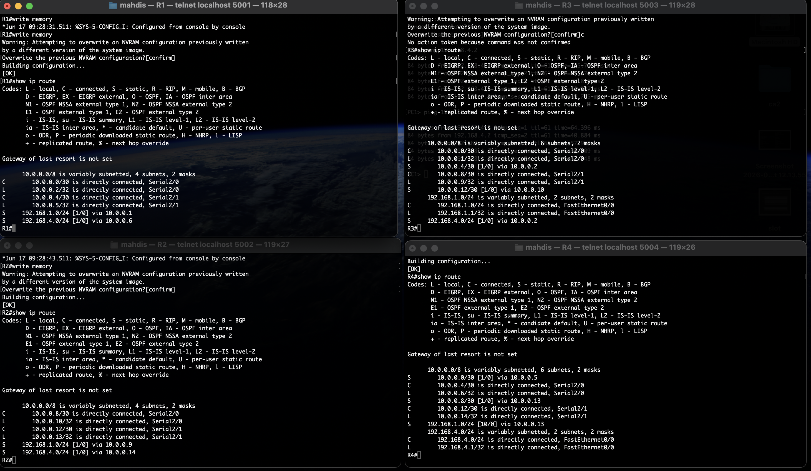
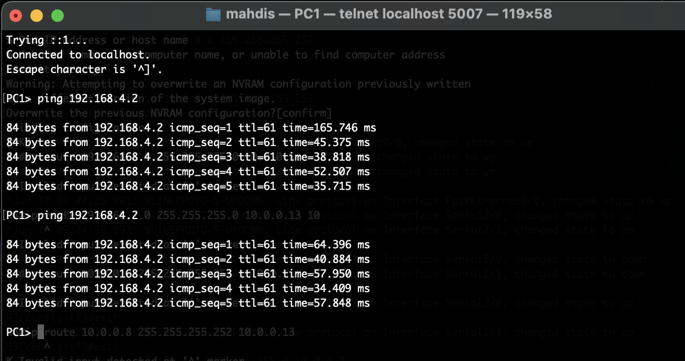
To test the redundant architecture, the primary serial interface (s2/0 on R3) was manually shut down. The routing table immediately converged to utilize the floating static route (via R2), maintaining uninterrupted connectivity between the edge networks.
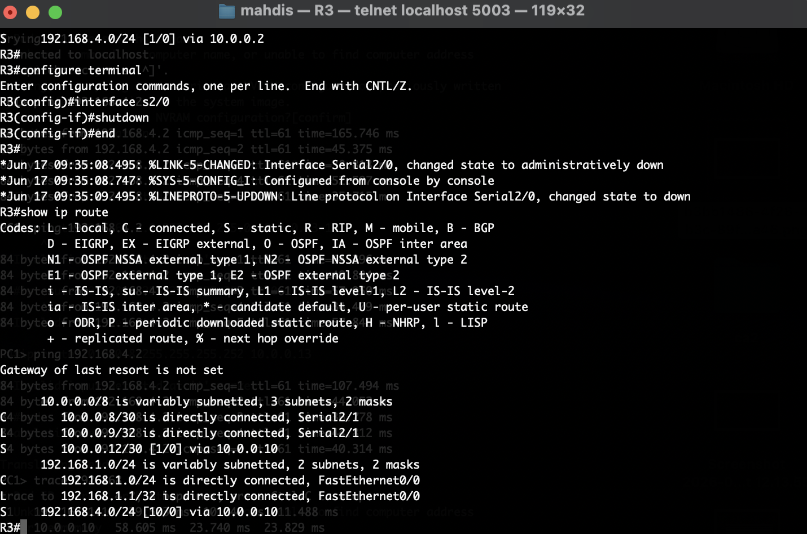
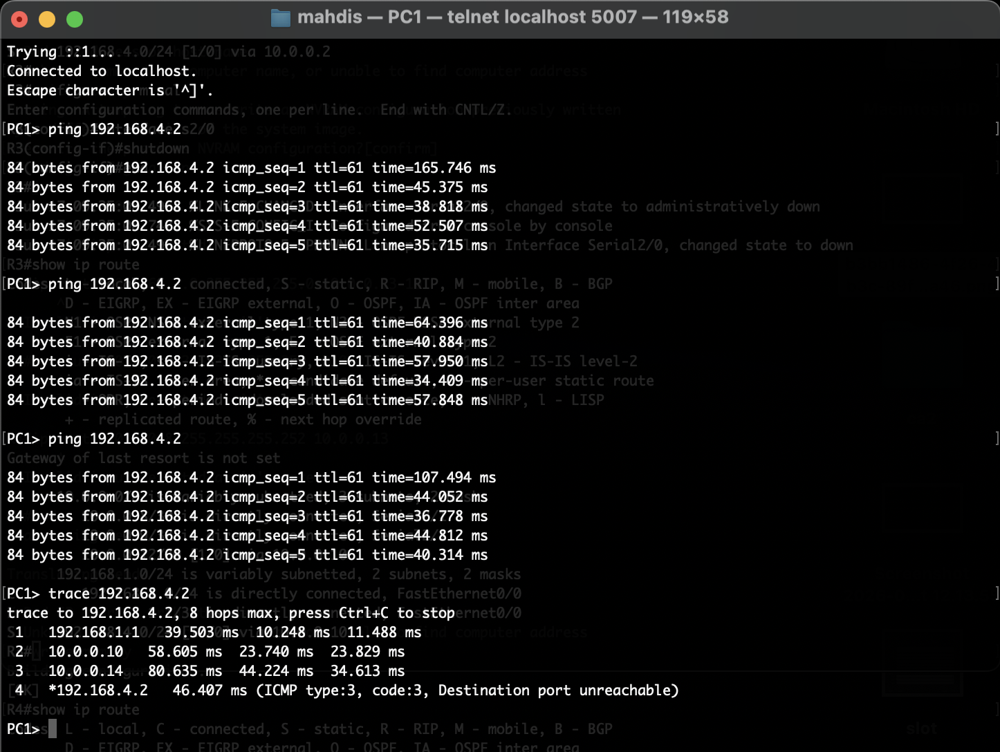
To eliminate the scalability limitations of static routing, the network was transitioned to use the Open Shortest Path First (OSPF) Link-State routing protocol. The IP addressing scheme was updated to reflect the new dynamic routing scenario.
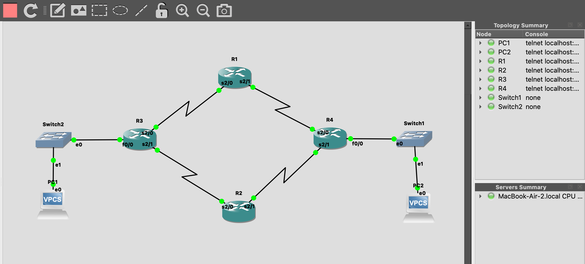
Static routes were removed from the routers to prevent conflicts. OSPF Process ID 1 was then enabled globally on all core routers, and connected networks were advertised into Area 0 (the backbone area) using wildcard masks.
Once configured, the routers successfully exchanged Link-State Advertisements (LSAs), formed neighbor adjacencies, and populated their routing tables automatically. The final end-to-end ping test was completely successful, confirming that OSPF had correctly mapped the topology. The initial ping delay reflects the time required for the network to resolve addresses dynamically across the newly established OSPF routes.
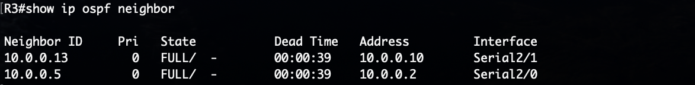
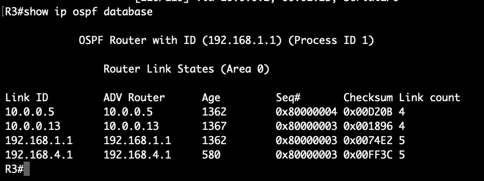
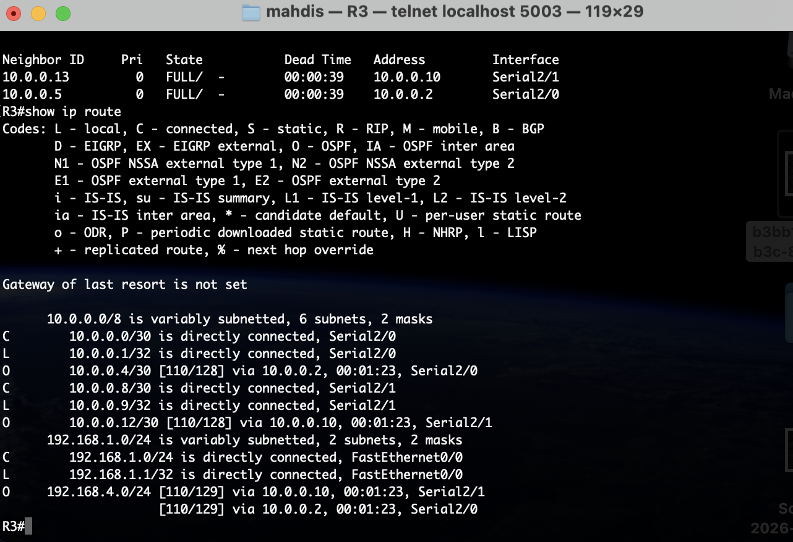
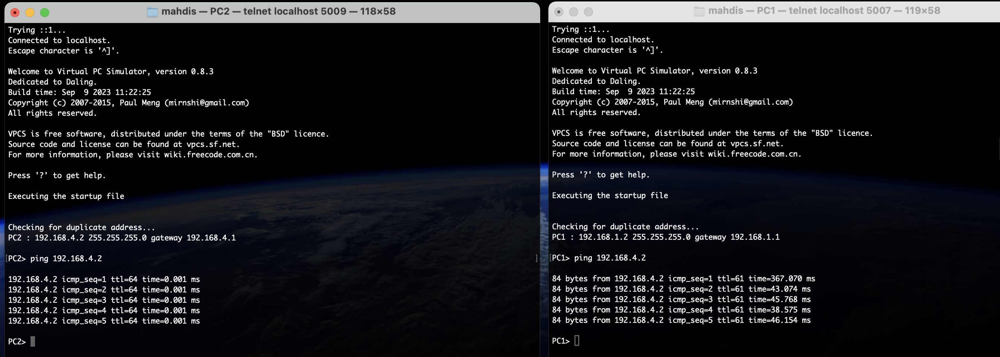
This computer assignment successfully demonstrated the progression of network design from simple Layer 2 switching to complex Layer 3 routing. By implementing inter-VLAN segmentation, manually configuring static routes with failover redundancy, and finally deploying the OSPF dynamic routing protocol, we verified the fundamental mechanisms that allow robust, fault-tolerant communication across Wide Area Networks.